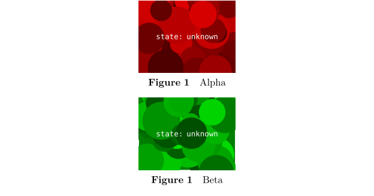
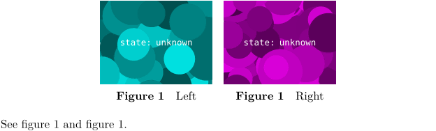
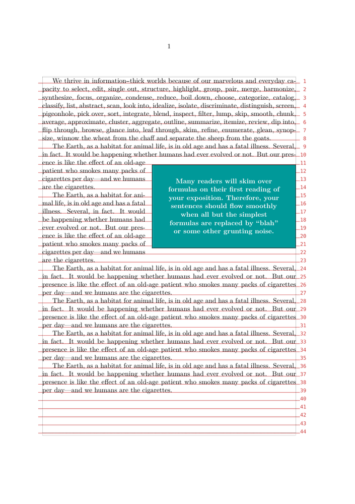
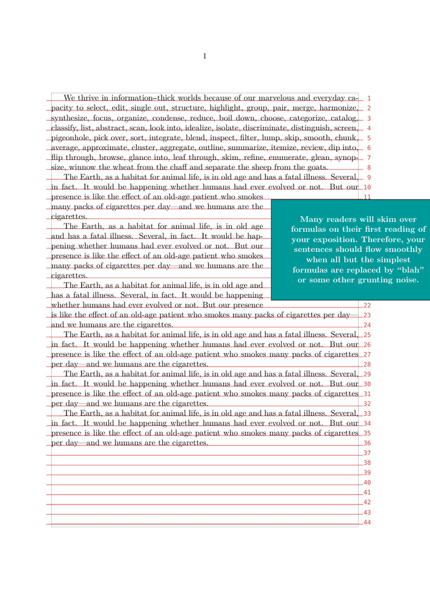

Contents
Introduction
Floating Objects (floats) are placed (and numbered) automatically, with a configurable (and optional) caption. They are placed at an appropriate position determined by the TeX float placement algorithm. The algorithm has a number of options that can influence float placement.
Most options in the manual (such as \placeexternalfigure) are described using the generic \placefloat. Additionally, \placelistoffigures creates a list of the figures used in the document.
Floats include "graphic", "figure", "table", and "intermezzo". Additional floats can be defined using \definefloat.
\placefloat[place][reference]{caption}{some float}
place is one or several (comma separated) of:
| preference | result |
|---|---|
| left | left of text |
| right | right of text |
| here | preferably here |
| top | at top of page |
| bottom | at bottom of page |
| inleft | in left margin |
| inright | in right margin |
| inmargin | in the margin (left or right) |
| margin | in the margin (margin float) |
| page | on a new (empty) page |
| opposite | on the left page |
| 90 | orientation (rotation angle), both caption and contents |
| always | precedence over stored floats |
| force | per se here |
| split | (For TABLES only) split tables |
(table copied from the manual)
\placefigure and \placetable also accept the same set of options, and allow to create floating figures and captions respectively.
reference
If you don't need to refer to your float, you can leave this parameter out.
\setupfloatframed can also be quite valuable.
Examples
I will explain the examples in terms of \placefigure but the same set of options are also valid for other floats.
- If you do not want a caption
\placefigure[none] {} {\externalfigure[figurename]}
- If you do not want the figure to be numbered (but still want the caption)
\placefigure [nonumber] {caption} {\externalfigure[figurename]}
- Suppose you want the figure to be placed on the right side of the page, a few lines into the paragraph, and want the rest of the paragraph to wrap around the figure
\placefigure [right,2*line] {caption} {\externalfigure[figurename]}
or
\placefigure [right,2*hang] {caption} {\externalfigure[figurename]}
This does not work correctly at a page boundary. The line option leaves the space above the figures empty, while the hang option also wraps texts above the figure.
Floats and columns
This special case is discussed here.
Floats on empty pages
There’s a way to switch off page headings at full page floats:
\startplacefigure[title=Cow,location={page,high,header}] \externalfigure[cow.pdf] \stopplacefigure
Protruding Floats in Double-Sided Documents
If you have a double-sided document with wide outer margins then you might want your figures to protrude into the margin. In a double-sided document you need to tell ConTeXt to decide whether to make the figure protrude to the left or the right. This can be done as follows:
\definefloat[textmarginfigure][textmarginfigures] \setupfloat[textmarginfigure][location=inner] \placetextmarginfigure{\externalfigure[figurename]}
The following code gives a full example that can be pasted into live ConTeXt:
\setuppagenumbering [alternative=doublesided] \setuplayout[location=middle,backspace=2pc, width=20pc] \definefloat[textmarginfigure][textmarginfigures] \setupfloat[textmarginfigure][location=inner] \starttext \input knuth \placetextmarginfigure[here]{}{\externalfigure[figurename][width=30pc]} \input knuth \placetextmarginfigure[here]{}{\externalfigure[figurename][width=30pc]} \input knuth \stoptext
Landscape Floats in a Portrait Document
Wide tables, for example, can be turned and most likely will need to be put on a separate page.
\startplacetable [location={page,90},title=Table caption] \bTABLE [textwidth=\textheight] put a wide table here... \eTABLE \stopplacetable
Both the table caption and the contents will be rotated, but not the page header and footer which remain "upright". Notice that one must set the TABLE textwidth to \textheight in order for the table macros to fit properly.
Floats and section headings
By default, section headings don't wrap “around” floating objects. Instead, they will be moved down as far as needed to appear below the float. This behaviour can be controlled using the aligntitle option of the \setupheads or \setuphead commands.
Captions
To change the style of figure(table) captions, use \setupcaptions.
To use a different (e.g. abbreviated) caption in the list of floats, you can do:
\startplacefigure[title={A rather long caption},list={A short caption}] This is the content of the actual figure \stopplacefigure
In MkII this was possible by:
\defineselector[caption][max=2,n=2] \starttext \setupselector[caption][n=1] \completelistoffigures \setupselector[caption][n=2] \placefigure[][] {\select{caption} {Short caption for list} {A rather longer caption which will appear below the figure itself}} {This is the content of the actual figure} \stoptext
Float Combinations
If you want to place floats besides each other or in a regular matrix, each with its own number and caption, you need a float combination:
-
\useMPlibrary [dum] %% sample images \startplacefigure [location=none] % disable numbering of outer float \startfloatcombination [nx=2, ny=1] % two columns, one row \startplacefigure [title=Left] \externalfigure [dummy] \stopplacefigure \startplacefigure [title=Right] \externalfigure [dummy] \stopplacefigure \stopfloatcombination \stopplacefigure
If you want only one number for the whole thing, you may use a regular combination within a float:
-
\useMPlibrary [dum] %% sample images \startplacefigure [title=My combination] \startcombination [nx=2, ny=1] \startcontent \externalfigure [dummy] \stopcontent \startcaption Left \stopcaption \startcontent \externalfigure [dummy] \stopcontent \startcaption Right \stopcaption \stopcombination \stopplacefigure
See also \startcombination, \startfloatcombination and Combinations.
Subfloats
Subfloatnumbering creates subfigures sharing a mutual figure prefix and an individual subfigure designator (e.g. figure 1a), figure 1b, etc.). The command \startsubfloatnumbering is used for this.
-
\useMPlibrary [dum] %% sample images \startsubfloatnumbering \startplacefigure [title=Alpha] \externalfigure \stopplacefigure \startplacefigure [title=Beta] \externalfigure \stopplacefigure \stopsubfloatnumbering
- 
Subfloats can also be used with floatcombinations:
-
\useMPlibrary [dum] %% sample images \startplacefigure [location=none] \startsubfloatnumbering \startfloatcombination [nx=2, ny=1] \startplacefigure [title=Left, reference=fig:left] \externalfigure \stopplacefigure \startplacefigure [title=Right, reference=fig:right] \externalfigure \stopplacefigure \stopfloatcombination \stopsubfloatnumbering \stopplacefigure See \in{figure}[fig:left] and \in{figure}[fig:right].
- 
See also \startcombination, \startfloatcombination, Combinations and \startsubfloatcombination.
Flushing floats
The command \placefloats outputs all pending floats.
Playing with side floats position
From tex.stackexchange.com "Place a quote half over margin" (2025)
You can use \movesidefloat.
Basic situation
-
\setuplayout [grid=on] \showgrid \defineframed [Quote] [align={middle,lohi}, foregroundstyle=bold, foregroundcolor=white, background=color, backgroundcolor=middlecyan, width=6cm, offset=.5cm, ] \definefloat [Quotefloat] \setupindenting[yes,medium] \starttext \samplefile{tufte} \startplacefloat [Quotefloat] [location={right,none,2*hang}] \startframed[Quote] \samplefile{knuthmath} \stopframed \stopplacefloat \dorecurse{6}{\samplefile{ward}\par} \stoptext
- 
With \movesidefloat
-
\setuplayout [grid=on] \showgrid \defineframed [Quote] [align={middle,lohi}, foregroundstyle=bold, foregroundcolor=white, background=color, backgroundcolor=middlecyan, width=6cm, offset=.5cm, ] \definefloat [Quotefloat] \setupindenting[yes,medium] \starttext \samplefile{tufte} \movesidefloat[x=-3cm] % <== HERE HERE \startplacefloat [Quotefloat] [location={right,none,2*hang}] \startframed[Quote] \samplefile{knuthmath} \stopframed \stopplacefloat \dorecurse{6}{\samplefile{ward}\par} \stoptext
- 